We are a small, religious, and independent nation.
－ the 13th Dalai Lama, 1913
Tibet has a rich history as a nation for centuries. In 1950, China decided that Tibet must become a permanent part of the People's Republic of China and launched an invasion. The Tibetan government - led by the still teenaged Dalai Lama - was forced to recognise China's rule in return for promises to protect Tibet's political system and Tibetan Buddhism.
China failed to keep its promises on 10 March 1959. Hundreds of thousands of Tibetans surrounded the Potala Palace in Lhasa fearing that the Dalai Lama was about to be kidnapped or assassinated. The uprising was brutally suppressed and the Dalai Lama was forced to flee into exile.
China failed to keep its promises on 10 March 1959. Hundreds of thousands of Tibetans surrounded the Potala Palace in Lhasa fearing that the Dalai Lama was about to be kidnapped or assassinated. The uprising was brutally suppressed and the Dalai Lama was forced to flee into exile.
Now,
The 10th of March
is commemorated as National Uprising Day
by Tibetans.
The 10th of March
is commemorated as National Uprising Day
by Tibetans.
-
-
Independence Reaffirmed
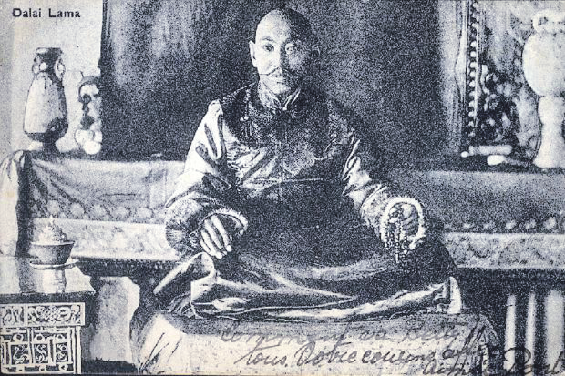
The Qing emperor abdicated following the establishment of the Republic of China. All Chinese troops were expelled from Lhasa. The Dalai Lama reaffirmed Tibet's independence saying "We are a small, religious, and independent nation." -
Shimla Treaty
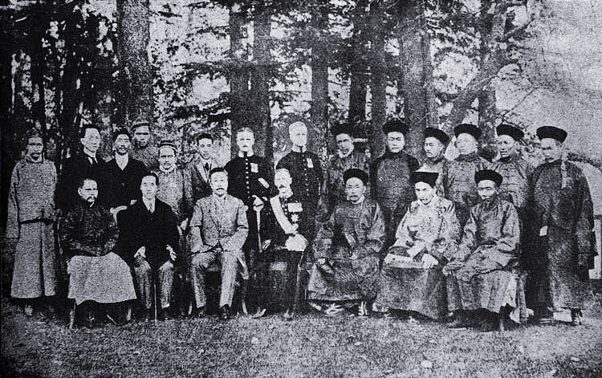
Britain, Tibet and China met to negotiate the borders of India and her northern neighbours. The treaty gave secular control of Qinghai to China and recognised the autonomy of the rest of Tibet. China refused to sign as a result of south Tibet being ceded to British India. -
Chinese Invasion
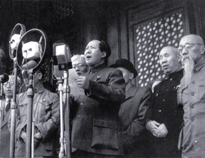
Radio Beijing announced: "The task of the People's Liberation Army for 1950 is to liberate Tibet." In October, 40,000 Chinese troops invaded. 15-year-old Tenzin Gyatso was given full powers to rule as the 14th Dalai Lama. -
17-Point Agreement
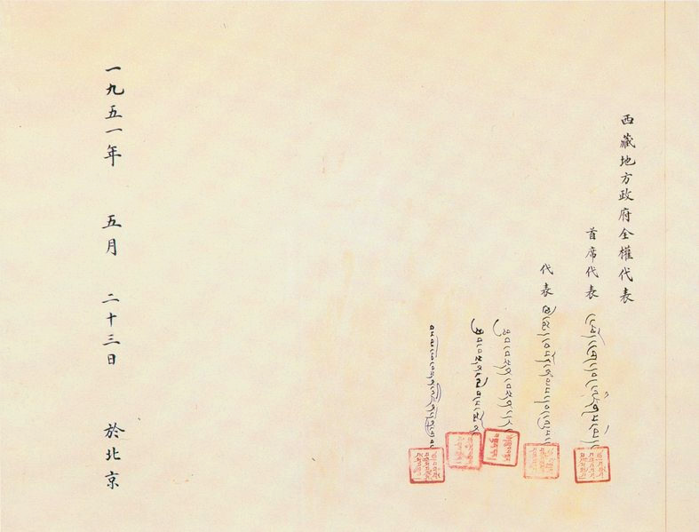
This affirmed Chinese sovereignity over Tibet and stated that China would not "alter the existing political system in Tibet" and that "in matters relating to various reforms in Tibet there would be no compulsion on the part of the central authorities". -
Tibetan National Uprising
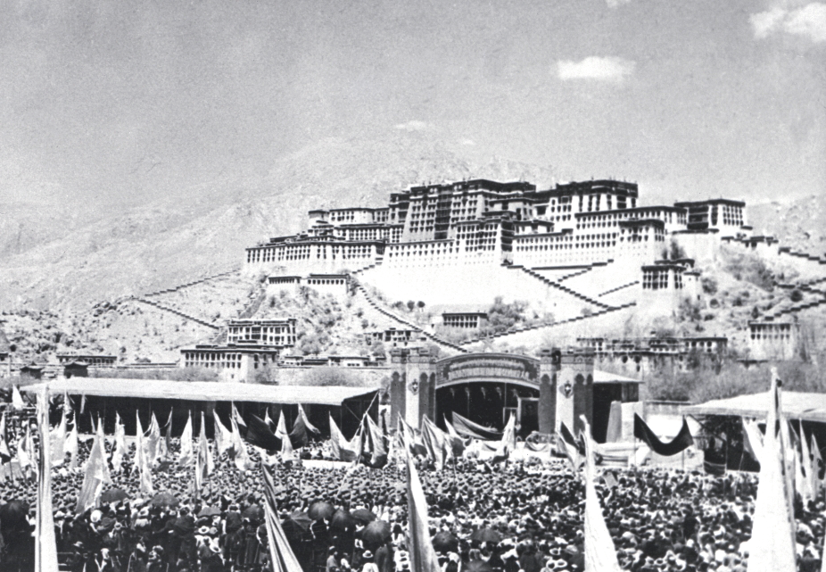
As Lhasa became filled with refugees from eastern Tibet, the resistance movement grew. The Chinese responded with widespread brutality. On 10 March, fearful of plans to abduct the Dalai Lama, 300,000 Tibetans surrounded Potala Palace to offer protection. A week later the Dalai Lama fled over the mountains to India. -
Famine and Destruction
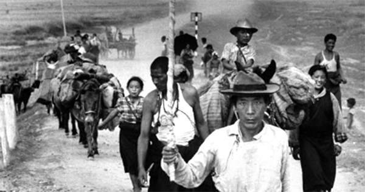
The Great Leap Forward, Mao's catastrophic campaign to rapidly transform an agrarian economy into a communist society, led to the deaths of hundreds of thousands of Tibetan peasants and nomads. Thousands of monasteries were also destroyed during this period. -
Tibet Autonomous Region
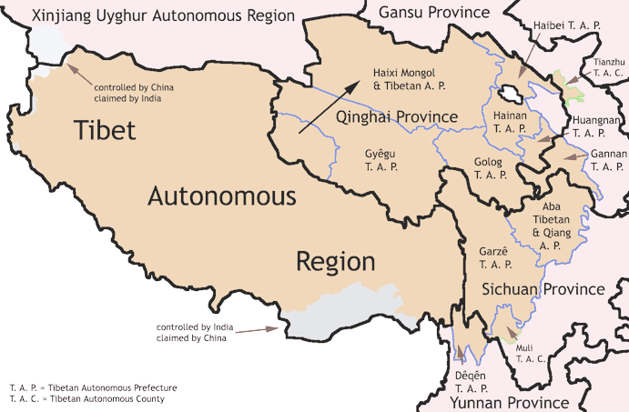
One of Tibet's three provinces, U-Tsang, was formally inaugurated as the Tibet Autonmous Region (TAR). Along with Amdo and Kham, historical Tibet was about the size of western Europe. The former was renamed Qinghai and the latter incorporated into the Chinese provinces of Sichuan, Gansu and Yunnan. -
The Cultural Revolution
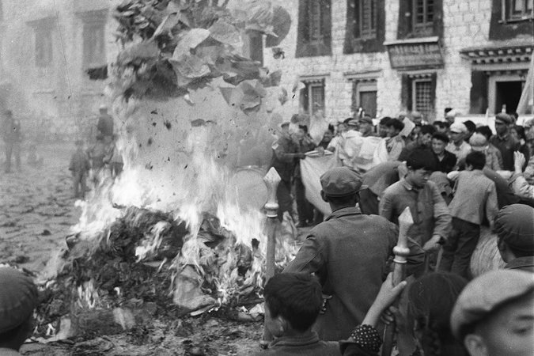
Mao's movement to enforce communism on every aspect of society led to the destruction of Buddhist monasteries and cultural sites. -
The Middle Way
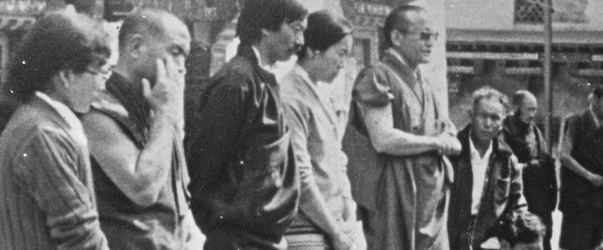
In 1982, a high level Tibetan delegation arrived in Beijing to uphold talks with China. In 1988, the Dalai Lama offered the 'Strasbourg Proposal' calling for autonomy over domestic affairs; no progress was made. Also, Qiao Shi, China's security chief, visited Tibet and vowed to "adopt a policy of merciless repression". -
Tibetan Unrest
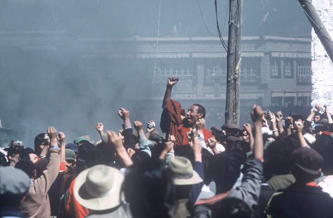
Numerous protests across Tibet lead to deaths and political prisoners. On the 30th anniversary of the National Uprising thousands took to the streets. The authorities responded with brutal force, expelled all foreigners and declared martial law. The Dalai Lama was awarded the Nobel Peace Prize. -
Religious Repression Intensified
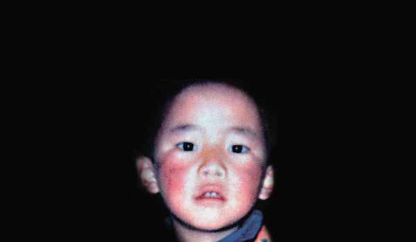
In 1995 six-year-old Gendun Choekyi Nyima, recognised as the 11th Panchen Lama, became the world's youngest political prisoner when he was taken by Chinese authorities. The following year China launched a patriotic re-education campaign. -
Global protests, Beijing Olympics
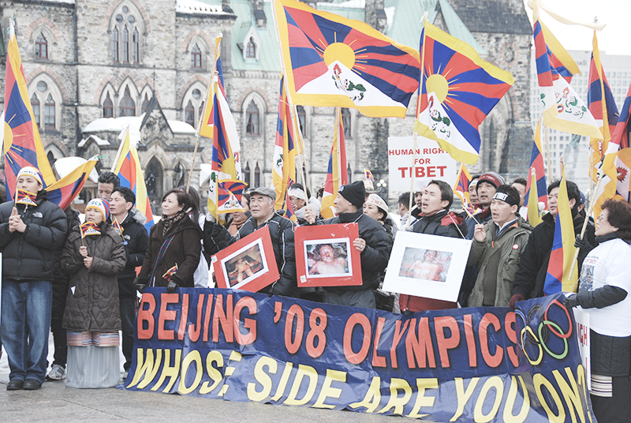
Observance of National Uprising Day led to widespread protests across Tibet. A brutal crackdown is initiated by the authorities. Protests supporting Tibet erupted in cities across North America and Europe, targeting Chinese embassies and the Olympic torch relay. -
Self-immolation Protests
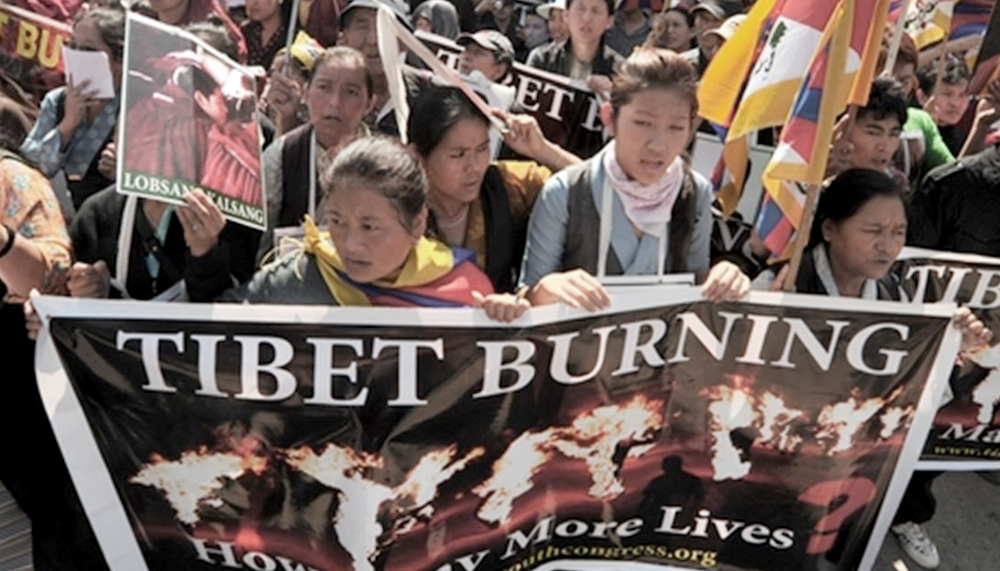
On 16 March 2011 a young monk from Kirti Monastery named Phuntsog set himself on fire in Ngaba. Since then, there have been over 135 self immolation protests. Self-immolation protests peaked in 2012 when more than 80 took place. There have been far fewer since 2013 but they are still a feature of Tibetan resistance. These acts, along with other significant protests over the last few years, demonstrate Tibetans' fundamental rejection of Chinese rule. -
New Forms of Protest
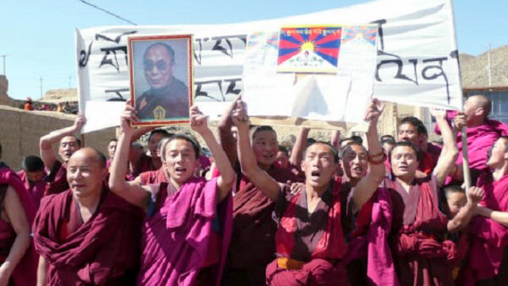
Since the violent response to the widespread protests of 2008, large protests have continued occasionally but Tibetans have also sought new ways to defend their identity and basic rights. This has included nomads protecting their land by blocking the arrival of construction vehicles, young people walking down the street with the Dalai Lama's banned image, students protesting the the replacement of Tibetan language with Chinese in schools, and artists writing poems and songs celebrating Tibet's culture and nationhood. China has continued to respond to Tibetan protest and expressions of national pride with lethal violence and punitive sentences. -
Until now, they still fight for their freedom.